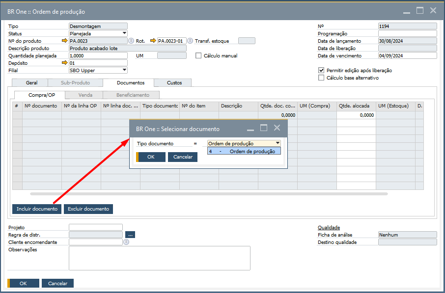

Versão 4.11.328
Melhorias
Desconsiderar OP de beneficiamento de compra no fechamento de custo
Com a mais recente atualização do BR One 328, foi implementada uma melhoria significativa no fechamento de custo contábil. Agora, as ordens de produção referentes ao beneficiamento de compras não serão incluídas no fechamento de custos contábeis. Quando uma OP desse tipo for criada, a flag Ignorar no fechamento de custos estará automaticamente marcada e bloqueada, impedindo que seja desmarcada.
No processo anterior, ao marcar essa flag, o sistema emitia um aviso ao usuário, informando que não seria possível realizar a entrada de Produto Acabado (PA) com a flag marcada. No entanto, para as ordens de produção de beneficiamento de compras, não há necessidade de inclusão no fechamento de custo. Por isso, a flag agora será bloqueada, permitindo a entrada de PA neste processo sem restrições.
Permitir incluir documento na Ordem de produção de desmontagem
Com a mais recente atualização do BR One 328, foi implementada uma melhoria no processo de desmontagem. Agora, as abas Documentos e Compra/OP estarão desbloqueadas, permitindo a inclusão de um documento de Ordem de Produção. Essa melhoria visa garantir maior rastreabilidade no processo de desmontagem, permitindo ao usuário registrar a OP associada à desmontagem realizada.
Recuperação do preço unitário para itens Série/Lote
Com a mais recente atualização do BR One 328, foi implementada uma melhoria no processo de transferência entre filiais. Agora, para itens que utilizam o método de avaliação Série/Lote, o custo unitário exibido na tela de transferência de estoque será automaticamente refletido no preço unitário da nota fiscal de saída.
Funcionalidade multidimensões
Com a atualização mais recente do BR One 328, foi implementada uma melhoria para suporte a multidimensões. Agora, quando a opção “Utilizar multidimensões” do SAP estiver ativada na aba Contabilidade de custos em Configurações Gerais, os campos relacionados à Regra de distr. do BR One serão atualizados automaticamente nas seguintes telas:
Saída de Insumo
Saída de Insumo (Refugo)
Entrada de PA
Entrada de PA (Refugo)
Entrada de Subproduto
LCM de GGF Arbitrado
LCM de Desvio de Custo
Reavaliação de Desvio de Custo
Nessas telas, o campo da Regra de distr. ficará bloqueado para edição, permitindo apenas a seleção da regra desejada por meio do botão […], conforme dimensões definidas.
Correções
Erro ao adicionar um documento de marketing
Realizado um ajuste na validação dos depósitos nos documentos de marketing, evitando a exibição do erro: “BR One :: Falha ao validar estoque. Retorno: Referência de objeto não definida para uma instância de um objeto.”